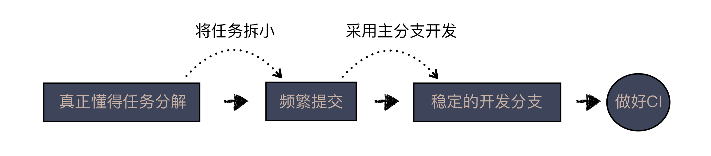
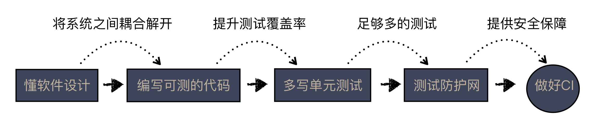

答疑解惑 | 持续集成，一条贯穿诸多实践的主线
“沟通反馈”模块又告一段落了，在这个模块中，我们把自己与真实世界的距离又拉近了一步。
一方面，我们强调主动沟通，把自身的信息更有效地传达出去；另一方面，我们也重视反馈，让真实世界的信息，更多地回到我们身边。同学们分享了很多经验，也提出了不少的问题。
在今天的答疑中，我选择了几个非常好的问题，从不同的角度丰富一下之前讲解的内容。
问题1：单元测试做不好，是否会影响到 CI 的效果？
毅 同学提到
如果单元测试做的不到位，或者不满足A-TRIP，是不是执行CI的效果就会弱很多？
——《24 | 快速反馈：为什么你们公司总是做不好持续集成？》
这是一个非常好的问题，问到了各种实践之间的关联。我们在前面用了两讲的篇幅介绍了持续集成这个实践，为什么要做持续集成以及如何做好持续集成。
在自动化模块，我们还会在这个基础之上继续延伸，介绍持续交付，这些内容是从操作的层面上进行介绍，都是对单一实践的描述。
利用这次答疑的机会，我再补充一个维度，谈谈实践之间的关联。
持续集成的价值在于，它是一条主线，可以将诸多实践贯穿起来。也就是说，想要真正意义上做好持续集成，需要把周边的很多实践都要做好。
我们具体地说一下这些实践。但请记住我们说过的，做好持续集成的关键是，快速反馈。
比如，我们想要做好 CI，需要有一个稳定的开发分支，所以，最好采用主开发分支的方式。想用好主分支开发，最好能够频繁提交；而频繁提交需要你的任务足够小，能够快速完成；将任务拆解的足够小，需要你真正懂得任务分解。要想在一个分支上开发多个功能，那就需要用 Feature Toggle 或者 Branch by Abstraction。

在这条线上，你有很多机会走错路。比如，你选择了分支开发模式，合并速度就不会太快，一旦反馈快不了，CI 的作用就会降低；再者，如果不能频繁提交，每次合并代码的周期就会变长，一旦合并代码的周期变长，人们就会倾向于少做麻烦事，也就会进一步降低提交的频率，恶性循环就此开启。
同样，即便你懂得了前面的道理，不懂任务分解，想频繁提交，也是心有余而力不足的。而多功能并行开发，则会让你情不自禁地想考虑使用多分支模型。
我们再来看另外一条线，也就是这个问题中提到的测试。
想做好 CI，首先要有可检查的东西，什么是可检查的东西，最简单的就是编译、代码风格检查，这些检查可以无条件加入构建脚本。但更重要的检查，应该来自于测试，而要想做好 CI，我们要有测试防护网。

什么叫测试防护网呢？就是你的测试要能给你提供一个足够安全的保障，这也就意味着你要有足够多的测试。换个更技术点的术语来说，就是要有足够高的测试覆盖率。
如果测试覆盖率不够，即便提交了代码，CI 都通过了，你对自己的代码依然是没有信心的，这就会降低 CI 在你的心中的地位。
如果想有足够高的测试覆盖率，你就要多写单元测试。我们在前面讲过测试金字塔了，上层测试因为很麻烦，你不会写太多，而且很多边界条件，通过上层测试是覆盖不到的，所以，测试覆盖率在经过了初期的快速提升后，到后期无论如何是提上不去的。要想提升测试覆盖率，唯有多写单元测试。
要想多写单元测试，就需要编写可以测试的代码，而要想编写可测的代码，就要懂软件设计，将系统之间耦合解开。
通过上面的分析，你已经看出来做好持续集成，让它完全发挥自己的价值，需要做的工作还是相当多的。但也请别灰心，实际上，我做咨询时，很多团队就是从持续集成下手，开始改造他们的软件开发过程。
这是一个“以终为始”的思路，先锁定好目标，就是要把持续集成做好，然后围绕着这个目标改进其他做得欠佳的方面。比如，原来是多分支的，就先固定一个主分支，然后，逐步改变大家的开发习惯，让他们进入单分支的开发状态。
再比如，原来没有测试，那就在 CI 上先加一个最低的测试覆盖率，然后定期去提高，比如，第一周是10%，第二周是20%，这样一步一步地提高，开发团队可以一边开发新东西，一边为既有代码补测试。等到覆盖率到了一定程度，提高有困难了，团队就可以考虑怎么改进设计了。
所以，CI 作为一个单独的实践，本身是很简单的，但它可以成为提纲挈领的主线，帮助团队不断改善自己的开发过程。
问题2：老板参加复盘，不敢说真话怎么办？
grass10happy 同学提到
复盘是不是最好是团队内部进行，每次老板参加复盘，好像就没人说出真话了。
——《25 | 开发中的问题一再出现，应该怎么办？》
感谢 grass10happy 同学这个提问，把我因为篇幅原因省掉的一个部分给挽救了回来。
回顾会议的目的在于改进，它不仅仅在于让大家参与进来，更重要的是让团队成员能够敞开心扉，把问题暴露出来。暴露问题，是改进的前提条件。
我在《27 | 尽早暴露问题： 为什么被指责的总是你？》这篇文章中说过了，对于很多人来说，敢不敢暴露问题是个心理问题。你会发现，同事之间聊天，普遍是没有任何压力的，你几乎可以放心大胆地谈论各种问题，而一旦有领导在，很多顾虑就会出现了。
于是，问题就变成了怎么能够让大家放心地把问题暴露出来，一个办法就是设置一个安全的环境。
怎么设置一个安全的环境呢？对于标准的回顾会议来说，第一步应该是做安全性检查。
先由大家投票，最简单的方式是就是，给当前的环境打分。你觉得可以畅所欲言就打1分，你觉得还好，就打0分，如果你觉得不方便表达，比如，你看领导在，很多问题不适合反馈，就打-1。
每个与会者都投出属于自己的一票。然后，主持人根据投票结果决定回顾会议是否进行，比如，有人投-1就不能继续。
会议能继续固然好，一旦会议不能继续，可以有多种解决方案。比如，把在场职位最高的人请出去，这个人可能就是老板。老板也许心里很不爽，但在这个过程中，大家都是按照规则在办事，并不存在对谁另眼相待的情况。
当老板离席之后，我们再进行一轮投票，判断环境是否变得安全了。如此反复，也许要进行几轮投票，直到大家觉得安全了。
当然，也有可能进行多轮，有人始终觉得不安全，那可能最好的选择是，取消今天的回顾会议，换个时间地点从头再来。而项目负责人则需要私下里解决一下团队内心安全的问题。
通过安全性检查之后，我们才会进入回顾会议的正式环节，具体内容在正文中已经讲过了，这里就不再赘述了。
问题3：国内的技术信息落后吗？
One day 提到
老师能否多多介绍一下技术方面的网站之类的，新技术发展见闻之类的，或者技术总结方面。国内的技术基本都多少有些滞后。
——《23 | 可视化：一种更为直观的沟通方式》
这个问题让我感觉自己一下子回到了好多年前。我刚入行的那会，学习新知识确实要多看看英文网站，当时的信息传播速度不快，中文技术网站不多。
但在今天，显然已经不是这样了，如果只是想获得最新的技术信息，我在《23 | 可视化：一种更为直观的沟通方式》这篇文章中介绍了 InfoQ 和技术雷达，这上面的信息量已经很丰富了。你再只要稍微看几个网站，关注几个公众号，各种信息就会送到你面前。
所以，你根本不用担心会错过什么新技术，反倒是信息量太大，需要好好过滤一下。
国内程序员真正落后的不是信息，而是观念。
我讲的很多内容是软件工程方面的，以我对国内外程序员的了解来看，发达国家的程序员在这些内容的普及上，要比国内程序员好很多。
国内程序员的平均水平，大多停留在实现一个功能的理解上，而发达国家的程序员做事要专业许多。所以，以专业素养来看，国内程序员还有很大的提升空间。
在经济学里有“边际效用递减法则”（The Law Of Diminishing Marginal Utility），说的是当你手里某一物品总数越来越多时，新增一个单位该物品所获得的效用通常会越来越少。
当你的技术知识积累到一定程度时，还采用原来的学习方式，就很难获得真正意义上的提高，这是很多人抱怨 IT 行业不好混的原因。
同时，这也是我开设这个专栏的初衷，希望给大家一些不同的视角，一些新的前进动力。
好，今天的答疑就到这里。我想请你分享一下，你是怎么理解这些问题的呢？欢迎在留言区写下你的想法。
感谢阅读，如果你觉得这篇文章对你有帮助的话，也欢迎把它分享给你的朋友。